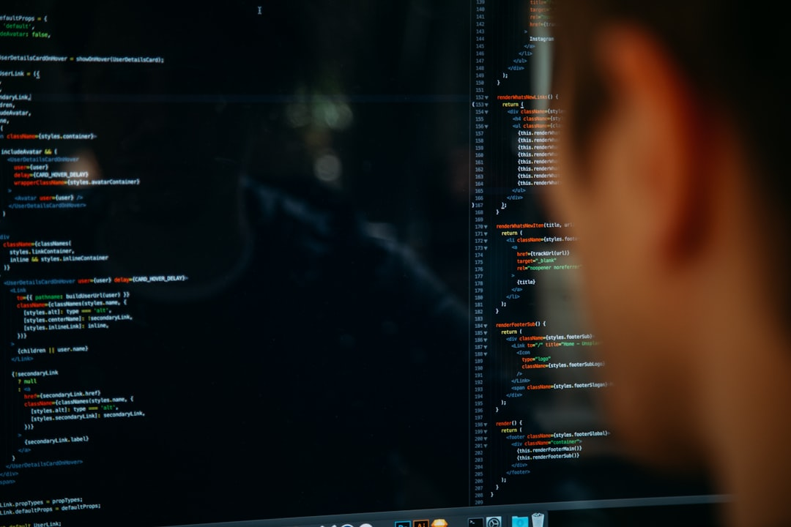

一、三尊神的黄昏
程序员这三十年，心里供着三尊神。
精确、逻辑、优雅。为了一个分号的位置可以跟人在 Code Review 里杠半天；为了把一个 O(n²) 优化到 O(n log n) 可以熬三个通宵；为了"架构优雅"，甚至敢在茶水间冷笑——"那种能跑就行的代码，就是垃圾。"
这套鄙视链，是程序员的宗祠。懂原理的瞧不上只会用框架的，"底层党"瞧不上"调包侠"，大厂P7瞧不上培训班出来的。
——然后AI来了。
AI不讲精确，只讲概率。AI不讲优雅，只讲够用。AI不讲第一性原理，只讲"历史上别人这么写过"。
而它赢了。数据是冰冷的。
Google CEO Pichai 在2024年底说"超过25%的新代码是AI写的"；2025年Q1变成"30%"；2026年初，这个数字逼近50%——谷歌一半的新代码，不是人写的。
Meta的内部KPI更极端：2026年年中前，65%的工程师，75%的代码变更必须由AI辅助完成。这不是建议，是硬考核。
Salesforce的Benioff在2025年1月的财报会上说得更直接："我们今年不招任何新工程师。" 到9月，他在一档播客里补了一刀——"我把客服从9000人砍到5000，因为我需要更少的人头。"
你以为最扎心的是这些吗？
不是。最扎心的是麻省理工METR实验室2025年7月发的那篇研究：16个资深开源项目程序员用AI写代码，实际上慢了19%，但他们自以为快了20%。
精确、逻辑、优雅——这些我们当成技术尊严的勋章。
勋章好戴的时候，我们以为自己是骑士。
勋章褪色，才发现自己一直是一个打工的。而且是个连"工作到底变快了还是变慢了"都分不清的打工的。
鲁迅写阿Q画圆圈——"他生怕被人笑话，立志要画得圆。"
程序员也一样。AI都要接管代码了，你还在Code Review里为Tab还是空格杠半天。
圆圈画不画得圆，决定不了你会不会被枪毙。
二、抄经僧的檄文，和他印出来的辩护书
别以为程序员是第一批这样被戳穿的。
1473年，威尼斯。一个叫Filippo de Strata的多明我会修士，给当时的总督Nicolò Marcello上了一封拉丁文檄文。他想干什么？他要求总督下令禁止印刷术。
他的原话，一字不改翻译过来：
"笔是处女，印刷机是娼妇。"
他还骂印刷机为"正在摧毁一切体面法则的瘟疫"，担心"儿童会被印刷出来的不纯洁文本腐蚀"。
这些话你熟不熟？
把"印刷机"换成"AI"，把"笔"换成"人手写的代码"——是不是朋友圈里每天都能看到？
"AI生成的代码没有灵魂，是机器的排列组合。" "真正的程序员必须理解底层原理，AI只是表面的拼凑。" "Vibe Coding 出来的东西危险，不能上生产。"当年威尼斯总督有没有理他？没有。印刷厂继续开，书价继续跌。
更荒诞的事发生在21年后。另一个本笃会修道院院长Johannes Trithemius，写了一本书叫《赞美抄经人》（De laude scriptorum）——论证抄经是神圣的、不可替代的、有灵魂的。
这本书1494年出版。它是印刷出版的。
Trithemius自己呢？他管理的Sponheim修道院图书馆，50年内从40册扩充到2000册——他靠的正是印刷机。
这位抄经术最大的辩护人，是抄经术最大的掘墓人。
一边用印刷机扩藏书，一边写书骂印刷机。
这画面今天每天都在重演：一边在朋友圈转"AI代码没灵魂"，一边在Cursor里按下Tab键接受了第50个补全。
鲁迅写孔乙己，有一段最诛心的对话——
人家说他偷书，他涨红了脸争辩："窃书不能算偷……窃书！……读书人的事，能算偷么？"
今天的程序员说：用AI写代码不算抄，是Prompt工程。抄Stack Overflow不算抄，是"参考开源方案"。
读书人的事，能算偷么？
程序员的事，能算CV么？
三、电报员的白手套，和点灯人的两万五千盏灯
再往后看一百年。
19世纪末的美国，最受尊敬的"技术精英"，不是工程师——是电报员。
一个熟练的莫斯电报员每分钟收发超过40个词，每个人的发报节奏——行话叫"fist"——都独一无二，老手光听节奏就能认出是哪个同事在发。就像今天资深工程师一看代码风格就知道是谁写的。
他们月薪40美元（换算到今天约1200美元/月），穿西装，打领带，擦亮皮鞋。他们给自己的阶级起了一个心酸的名字——"戴白手套的劳工"（kid-gloved laborers）。
听起来很体面。但罗格斯大学电报员史学者Edwin Gabler一针见血：
"他们技艺超群，以'大众化绅士派头'自豪，但并非自雇——而是受雇于全国最大的公司之一。他们是'戴白手套的劳工'，摇摇欲坠地挂在阶级鸿沟的边缘。"
这句话翻译成2026年版本，就是：
"大厂P7。花名诗意。总包百万。但合同写着，随时可以N+1。"1883年7月19日，75%的Western Union电报员集体罢工。诉求是8小时工作制、周日加班费、同工同酬。罢工动机的深处其实是身份崩塌——"我们到底是技术精英，还是可替换零件？"
一个月后，罢工失败。骨干被拉进全国黑名单。
再往前推24年。
1907年4月24日，纽约曼哈顿。2.5万盏煤气灯，当晚没有一盏被点亮。
是点灯人在罢工。他们对抗的是什么？电灯。
那天晚上整个曼哈顿漆黑一片，只有中央公园的几条横贯路有光——因为那里已经提前装上了电灯。讽刺吗？非常讽刺。点灯人罢工的方式，恰好证明了他们已经不被需要。
他们的"辩护词"是什么？
- "电灯不可靠，经常跳闸。"
- "煤气灯有温暖的光晕，电灯没有灵魂。"
- "我们不止点灯，还巡视街道、守望治安。"
- "LLM会幻觉，不能上生产。"
- "AI生成的代码没有温度，只是拼凑。"
- "我不止写代码，还懂需求、懂业务、懂系统。"
最残忍的一幕，其实发生在更近的年代。
1980年，美国有33.9万簿记员和会计文员。1979年VisiCalc问世，1985年Excel发布。35年之后，这些岗位消失了40万。
但同期，更高级的会计师、审计师、分析师——多了60万。
被杀的是"算账的人"，被升华的是"判断数字的人"。AI时代的结构一模一样。
被杀的是"写代码的人"。
被升华的，是极少数"能判断什么代码值得被写"的人。
而绝大多数程序员，以为自己是后者。
其实是前者。
鲁迅写《故乡》里的闰土，少年时"手捏一柄钢叉向一匹猹尽力地刺去"——月下刺猹的少年。
中年闰土的手呢？
"那手也不是我所记得的红活圆实的手，却又粗又笨而且开裂，像是松树皮了。"
十年前在五道口合租刷LeetCode的兄弟，十年后同学会上叫你"总"——手指关节粗大开裂，头顶发量告急。
白手套终究会变成松树皮。
每一次都一样。
四、亲手拆神龛的僧人
——但程序员这一代，又和前面所有人不一样。
有一个前所未有的荒诞。
铁匠没造蒸汽机。抄经人没造印刷机。电报员没造电话。点灯人没造电灯。唯独程序员，是自己一行一行，把自己的掘墓机器写出来的。
OpenAI的工程师是程序员。Anthropic的工程师是程序员。Cursor的工程师是程序员。让程序员失业的这几个最狠的产品——每一行训练代码都是程序员自己写的。

你以为最狠的是这点？
不。最狠的是——他们一边写，一边发朋友圈说："这是人类历史上最伟大的技术进步。"
2025年10月，Andrej Karpathy在X上发了一条推文。Karpathy是谁？他是OpenAI的联合创始人，是Tesla前AI总监，是"反向传播"那代人里最会解释AI的人。这个人在硅谷代表"会写代码的神"。
他说了什么？
发明AI的人，成了第一个感到落后的程序员。"作为程序员，我从来没感觉被时代抛下得这么厉害。这个职业正在被剧烈地重构——程序员贡献的比特越来越稀疏。"
这就是反身性。
Anthropic做得更赤裸。
2025年，Anthropic宣布计划扩招到2000人。同一个CEO——Dario Amodei——在另一场演讲里公开说：
"AI系统正在变得强大到足以端到端自动化软件工程。结果是，包括我们自己在内的公司，未来可能不再需要这么多软件工程师。"
"我无法保证创造的工作会比摧毁的多。我们必须让这件事成真。我们必须想办法让这件事成真。"
"无法保证。"
这是全球最红的AI公司CEO，在2025年对全世界程序员的原话。
他还说了一句更锋利的：
"AI现在已经在Anthropic内部写大量代码，显著加快我们构建下一代AI系统的速度。这个反馈循环在逐月增强——可能只需要1到2年，当代AI就能自主构建下一代AI。"
下一代AI，是当代AI自己写的。
Anthropic工程师，是在训练自己的替代者。
这画面，翻译成最古老的比喻——
是僧人亲手拆了自己供奉的神龛，点上一炷香，然后给它唱一段赞美诗。铁匠被蒸汽机取代，他愤怒，他砸机器，他去卢德派那里报名。
抄经人被印刷术取代，他写檄文，他骂"笔是处女，印刷机是娼妇"。
电报员被电话取代，他罢工，他组工会。
只有程序员——他笑着。他在朋友圈转发"Claude 4.5发布"的截图，配文"震撼，时代在进步"。他在TEDx舞台上讲"拥抱AI"。他在孩子睡着的晚上，默默打开Cursor，按下那个Tab键。
鲁迅写阿Q被打之后，说"我总算被儿子打了，现在的世界真不像样"——这叫被动的精神胜利。
今天的程序员，是主动把刀磨好，递到对方手里，然后夸对方刀法好。这是哪门子的精神胜利？
这是人类历史上还没出现过的东西。
五、三代人的叙事债
但刀扎进中国程序员身上，还要再深三寸。
因为硅谷程序员失业，面对的是绿卡、是创业基金、是奥斯汀的远程工作、是冰岛Gap Year。
而中国程序员失业，面对的是——
2万8一个月的房贷。岳父岳母的期待。孩子的学区房。老家那个"咱们村出的第一个清华"的光环。那个通道——"寒门苦读 → 高考 → 211计算机 → 一线大厂 → 一线首付 → 娶妻生子"——过去二十年是中国普通家庭能看到的最接近"确定性"的上升阶梯。
它不是一份工作。它是一套叙事。
爷爷奶奶节衣缩食供学费，爸爸妈妈砸锅卖铁供四年大学，孩子996换三十年贷款，孙子刷算法题再送回这条路。三代人的预期，押在一条轨道上。
规格卡
【图类型】：对比图
【核心内容】：硅谷失业 vs 中国失业的出路结构
硅谷：
- 绿卡自由：签证解除，可换赛道
- 创业基金：L5平均有50万美金存款
- 远程工作：搬奥斯汀继续干
中国：
- 房贷断供：月供2.8万/月
- 父母养老：零托底
- 子女教育：学区房锁死
- 退路坍塌：老家也回不去
【布局建议】：左右对比，左侧硅谷三条路（浅蓝），右侧中国三座山（深红）
【配色】：主色 #1A56DB，强调色 #F05252，背景 #FFFFFF现在这条轨道的每一段，都在塌。
第一段塌：大学招牌。2025年，计算机专业就业率跌到68.65%，全国第七。部分高校计算机本科生就业率不足50%。清华、北大、浙大也悄悄把招牌换了——"计算机科学与技术"逐步并轨到"姚班"、"智班"、"人工智能试验班"。原来的牌子还挂着，内核已经替换。
第二段塌：大厂电梯。脉脉数据研究院的统计——字节跳动、拼多多员工平均年龄27岁；腾讯29岁；阿里、华为31岁。所有大厂，平均年龄都没超过35岁。
另一个数据更诛心：超过60%的岗位明确要求"35岁以下"。
2025年全国两会披露：80%的35岁以上求职者，投100份简历拿不到一个面试。
2025年下半年，BOSS直聘员工数同比减少14%；阿里员工规模缩减34%；百度部分非核心业务线裁员90%。
第三段塌：首付换贷。一个杭州程序员的真实账本——2023年上车，总价600万的房子，首付掏空，月供2.8万。北京更狠，一线非核心地段首付之后月供3万打不住。
第四段塌：老家。你以为大厂混不下去可以回老家？
2023年7月，一个叫李豹的前百度39岁程序员，被裁后在抖音发了一条视频——"每月房贷1.5万，我没地方可去"——直接冲上了热搜第一。他不是个例，他是一个时代的拐点。
视频评论里最高赞那句："老家已经没有能接住我的人了。"
第五段塌：孩子的路。吴昊，就是开头那个讲《资本论》的深圳前大厂程序员。他的视频爆红之后，有记者问他为什么还要让孩子学编程。
他沉默了很久。然后说了一句：
"因为我不知道还能让他学什么。"鲁迅在《坟·灯下漫笔》里划分中国历史——
"一，想做奴隶而不得的时代；二，暂时做稳了奴隶的时代。"
2010到2020年，中国程序员是"暂时做稳了奴隶"的时代。996是福报，加班有夜宵，年终奖有24薪，房子能买。
2023年之后，是"想做奴隶而不得"的时代。996想继续也没机会，35岁之后简历石沉大海，脉脉上每天几千条"求内推"的帖子——不是求升职，是求活路。
AI断的不是码农的饭碗，是中国式中产叙事的最后一根稻草。更恶心的是，寒气里总有一批人闻到血味——
"21天教你AI转型！"
"一个人月入10万的大模型副业！"
"不收学费，赚不到钱全额退费！"
2025年，澎湃新闻报道《AI骗局完成"产业升级"》——从199元基础课诱导升级到2000元进阶课，再到"Token传销"三级跳。北京日报、钛媒体、新浪财经都报过。
被割的是谁？
是那批交完这个月房贷，在网上搜"35岁转AI来得及吗"的中年程序员。
一刀又一刀。
六、"用AI的人取代不用AI的人"——新时代最大的精神胜利法
但最毒的那一刀，是大家互相递给彼此的。
你在朋友圈一定看过这句话——
"未来AI不会取代程序员，但会用AI的程序员一定会取代不会用AI的程序员。"
这句话出现在脉脉、即刻、知乎、公众号头图、演讲PPT、甚至公司内部OKR里。每个人都在点头。每个人都在转发。每个人都觉得自己找到了出路。
这是新时代最大的一句精神胜利法。生成 Prompt
a middle-aged programmer sitting alone at a cluttered desk late at night, facing an open laptop showing a course poster that says Prompt Engineering Mastery, empty beer bottles and instant noodle packaging around, harsh overhead fluorescent light, tired expression, dark blue and muted orange tones, flat design, minimalist illustration, no text readable, no labels, clean composition
为什么？
因为它假装给你希望，实际上把你锁在了更短的时间线里。
让我们看看2025到2026这一年里发生了什么。
DHH，Ruby on Rails的创始人，2025年中还在高调说——"AI做不到Junior程序员的水平。"37signals的新产品95%代码是人写的。他把AI比作"闪烁的灯泡"。
六个月后——2026年1月——他完全投降。他在个人博客里写：
"现在手敲精确语法对我来说感觉是一种苦差事。"
——不是"也许AI能帮忙"，是"手写代码是苦差事"。立场从防御转成了拥抱。
Sam Altman在2025年的一次公开演讲里说过一句意味深长的话——
"工程师的角色正在根本性地改变。你们会花更少时间写语法和调bug，更多时间命令计算机执行复杂的意图。"
听着像赋能对不对？
翻译一下。
"写语法"——这是过去程序员的核心技能。
"命令计算机"——这是过去产品经理、架构师的技能。
"执行复杂意图"——这是过去老板的技能。
Sam Altman其实在说：程序员被裁不了，因为你们会升级成产品经理、架构师、甚至老板。
听着很好。
但一家公司需要多少产品经理？多少架构师？多少老板？
一个P7岗位对应一个架构师，十个P5岗位合并成一个？还是合并成0.5个？
这就是升级的真相。升级不是每个人都升级——是100个程序员里，升级5个，淘汰95个。
而那95个人——他们正在转发朋友圈："用AI的人会取代不用AI的人。"
他们以为自己是那5个。
他们不是。
Cursor 0到20亿美金ARR用了3年。Devin去年发布。Cognition上个月又推新版本。每一代工具出来，都先吃掉"用上一代工具的人"。
再过三年——
AI不是取代"不用AI的人"。
AI是取代"用AI的人"。
鲁迅写阿Q喝醉了酒，喊"造反了！造反了！"
不知道革命是什么，也不知道革命后自己会不会被革命。
——今天每个程序员在朋友圈喊"All in AI"。
不知道AI是什么，也不知道AI会不会顺手把自己也all了。
鲁迅又写阿Q。被王胡打了嘴巴，自己愈发生气，然后——
"他擎起右手，用力地在自己脸上连打了两个嘴巴……打完之后，便心平气和起来，似乎打的是自己，被打的是别一个自己。"
被裁之后立刻报一个2万块的Prompt工程课。
那就是阿Q打自己嘴巴的当代版本。
打的是旧的"不懂AI的自己"，被打的是未来"学会了AI的自己"。
打完之后心满意足，睡得很沉。
第二天起床，继续刷Boss直聘。
七、最狠的一刀：你的工作本来就不该存在
这一节最不想写。但必须写。
已故的人类学家David Graeber，2018年出了一本书——《Bullshit Jobs》。
这本书把现代工作分了五类："无意义的工作"（Bullshit Jobs）。其中有一类，他起名叫——"Duct Tapers"，胶带工。
定义是什么？
"用临时修补的方式，去解决本来可以彻底消除的问题。"Graeber举的第一个例子就是——程序员。修bug的程序员，修别人烂代码的程序员，写workaround绕过历史遗留问题的程序员。
生成 Prompt
a tangled mess of cables and wires wrapped with duct tape, forming a chaotic sculpture on a server rack, one small label reading PRODUCTION barely visible, harsh industrial lighting, grunge style, flat design, minimalist illustration with dark humor, muted grey and yellow tones, no readable text, clean composition
想一想你的工作日常。
你每天有多少时间在真正"创造"？多少时间在——
开站会。写周报。填OKR。追bug修bug。给产品经理解释为什么这个需求2天做不完。跟运维扯皮为什么生产环境又挂了。重写上一个离职同事留下的屎山代码。
Scrum/敏捷相关的研究说——现代程序员超过50%的时间花在会议、流程、ceremony、追踪工具上。
这部分工作，不用等AI。
它本来就不应该存在。Graeber给Bullshit Jobs的测试公式是：
"如果这份工作明天消失，世界会不会变得更差，还是根本没区别，甚至更好？"
一个美工设计师、一个外科医生、一个公交司机消失了——世界会变差。
一个"把PRD翻译成if-else"的程序员消失了呢？
老板会临时慌一下。PR积压几天。产品延期一周。
然后有人用AI把他的工作做完了。
然后没人记得他。
这才是AI对程序员最狠的一刀——
AI不是摧毁了一个伟大的行业。AI只是让一个本来就是Bullshit Jobs的行业，终于显形了。程序员焦虑的真正根源，不是"我会失业"。
是——"我一直在假装我在创造，但其实我只是在给一个本来就不该存在的问题贴胶带。"
这个觉悟比失业更致命。
因为失业只是收入的问题。
而这个觉悟，是意义的问题。
鲁迅在《狂人日记》里写——
"我翻开历史一查，这历史没有年代，歪歪斜斜的每叶上都写着'仁义道德'几个字。我横竖睡不着，仔细看了半夜，才从字缝里看出字来，满本都写着两个字是'吃人'！"
翻开中国互联网大厂这十年。每一张PPT上都写着"用户价值"、"技术改变世界"、"工程师文化"。
仔细看了半夜，从字缝里看出两个字——
裁员。接着是狂人最锋利的那句反问：
"从来如此，便对么？"
996是福报？从来如此，便对么？
35岁优化？从来如此，便对么？
刷LeetCode进大厂？从来如此，便对么？
这份工作本身，从来如此，便对么？八、给四种人的具体下一步（一个不卖课的行动指南）
这一节会有人说我前面骂完了又来卖药。
先说清楚——以下不是"学会这些就不会失业"。而是——你反正都要做点什么，哪些方向至少不是精神胜利法。
规格卡
【图类型】：四象限卡片图 【核心内容】：四类程序员的行动指南 - 40+资深P7/P8：从底层党 → AI监督者 + 系统设计者 - 30-34中生代：从刷题冲大厂 → 深挖垂直场景 - 应届/学生：从CS保研 → AI细分岗位 - 程序员父母：从编程班 → 判断力/审美/人的能力 【布局建议】：2x2方格卡片，每个卡片包含角色+不做+做什么 【配色】：主色 #1A56DB，强调色 #F05252，背景 #FFFFFF
停止"底层党守门员"身份。停止在Code Review里证明自己比AI懂。你懂又怎样？没人在乎。
具体怎么做——
一是把每周20小时的学习投入在两件事：Agent/Prompt工程体系化（不是看B站速成课，是真的搭一套你自己的工作流）；行业Know-how沉淀（你这十年积累的"哪种代码该重写、哪种不该"的判断，AI至今做不好）。
二是主动申请去带"人机协作"的团队——不是纯人团队，也不是纯AI自动化，是10个人管50个Agent的那种。这种岗位在大厂里正在涌现，用的就是你这种有经验的人。
Linus Torvalds这种级别的人走的就是这条路——AI是工具，人类为代码签字背锅。这不是被动接受，是主动转型成"AI的监督者"。
第二种：30-34中生代别再刷LeetCode了。不是LeetCode没用，是它保护不了你。它只能让你从一个"被裁的P5"变成另一个"被裁的P6"。
你真正要做的是——挖一个AI五年内做不好的垂直场景。
举例：金融风控（法规太复杂、错了要坐牢、AI不敢担责）、医疗合规（同理）、工业控制（物理世界延迟和可靠性）、跨境电商（本地化知识+关系）。
不是说AI永远做不了这些——是说AI做到这些之前，你要成为这个领域唯一懂它的那个人。
两年时间够你从"会写代码的人"变成"这个行业没我不行的人"。这个身份，不怕被裁，怕的是你不动。
第三种：应届 / 学生看2026年春招数据——AI岗占新发岗位26.23%，去年同期2.29%，12倍跳升。 而Java开发、iOS、前端这些基础技术岗位招聘需求在大幅下滑。
信号已经写在墙上了。
具体方向：大模型后训练、Agent工程、AI产品经理、AI安全/对齐、多模态应用开发。去脉脉、去GitHub看那些AI初创公司的招聘JD——不是为了刷简历，是为了知道真实的技能需求长什么样。
不要再冲传统CS保研了。 保研三年之后你拿的是一张2022年的船票，上的是2029年的船。 第四种：程序员父母这一条最难也最重要。
如果你是一个程序员，正在给孩子报少儿编程班——
停下来。
你报这个班的真实动机，往往不是"孩子需要学"，而是"你自己心里需要一个安全感"——"至少我给他选了一条我知道怎么走的路。"
但那条路，正是你自己正在从上面掉下去的那条。
鲁迅当年在《狂人日记》里那句"救救孩子"——今天值得改写成—— "还没被刷题驯化的孩子，或者还有？"对孩子，比编程更重要的三样东西——
判断力：知道什么问题值得被解决。这是AI至今没有的能力。 审美：知道什么东西算好，什么算差。AI产出越多，这个能力越稀缺。 人的能力：能读懂人、说服人、带动人。AI永远学不会，因为它不是人。这三样没有编程班。它们在生活里，在你跟孩子的饭桌对话里，在他跟同伴解决一次小冲突的操场上。
九、绝望之为虚妄，正与希望相同
写到这里，很多人会期待我给一句鸡汤。
"只要拥抱变化，程序员依然是最有未来的行业。"
"AI不可怕，可怕的是不学习的人。"
"黎明前的黑暗是最深的，但黎明一定会来。"
不会有这些。生成 Prompt
an empty railroad track stretching into heavy fog on the horizon, a discarded company lanyard with an empty badge holder lying in the foreground on the gravel, single cold dawn light from behind, melancholic atmosphere, minimalist composition, flat design illustration, muted blue and grey tones, no text, no labels, clean background
鲁迅写《阿Q正传》，最狠的不是戳穿阿Q——是他不给阿Q出路。阿Q到最后也没觉醒，糊里糊涂被枪毙，村庄第二天继续麻木。
这才是文学的残忍。这也是真实的残忍。
市面上99%的"程序员AI焦虑"文章，写到一半都开始卖药——学Prompt、做独立开发者、开副业、卖课、做自媒体。
这些药，大多数都是新版精神胜利法。我上一节写的行动指南，也不是药。那只是"你如果非要做点什么，这些方向至少不是全盘自欺"。能不能成，取决于你、市场、时代——更取决于运气。
鲁迅在《野草》里，一篇叫《希望》的散文诗里，引过匈牙利诗人裴多菲一句话——
"绝望之为虚妄，正与希望相同。"
这句话妙在哪？
它不是鸡汤（"不要绝望，要有希望"）。
它也不是虚无（"彻底绝望吧，没救了"）。
它是一种比两者都高的清醒——
AI会彻底替代程序员？也许是虚妄。 AI不会替代程序员？也可能是虚妄。明天的需求评审还是要开。今晚的生产环境bug还是要改。老婆的房贷消息还是会在午夜12点准时弹出来。
该怎么活，还是怎么活。
区别只有一条—— 阿Q不知道自己是阿Q。 而你知道。这就是你跟阿Q唯一不同的地方。不多，但是全部。
程序员之路，原是一条铁轨。
前面有人走过，被碾了。
后面有人在走，以为自己跑得快。
可是——
车，从来不是铁轨决定的，是造车的人决定的。 而那个造车的人，从来不是你。程序员之路原是一条铁轨。前面有人走过被碾了，后面有人在走以为自己跑得快。
可是——车，从来不是铁轨决定的，是造车的人决定的。而那个造车的人，从来不是你。